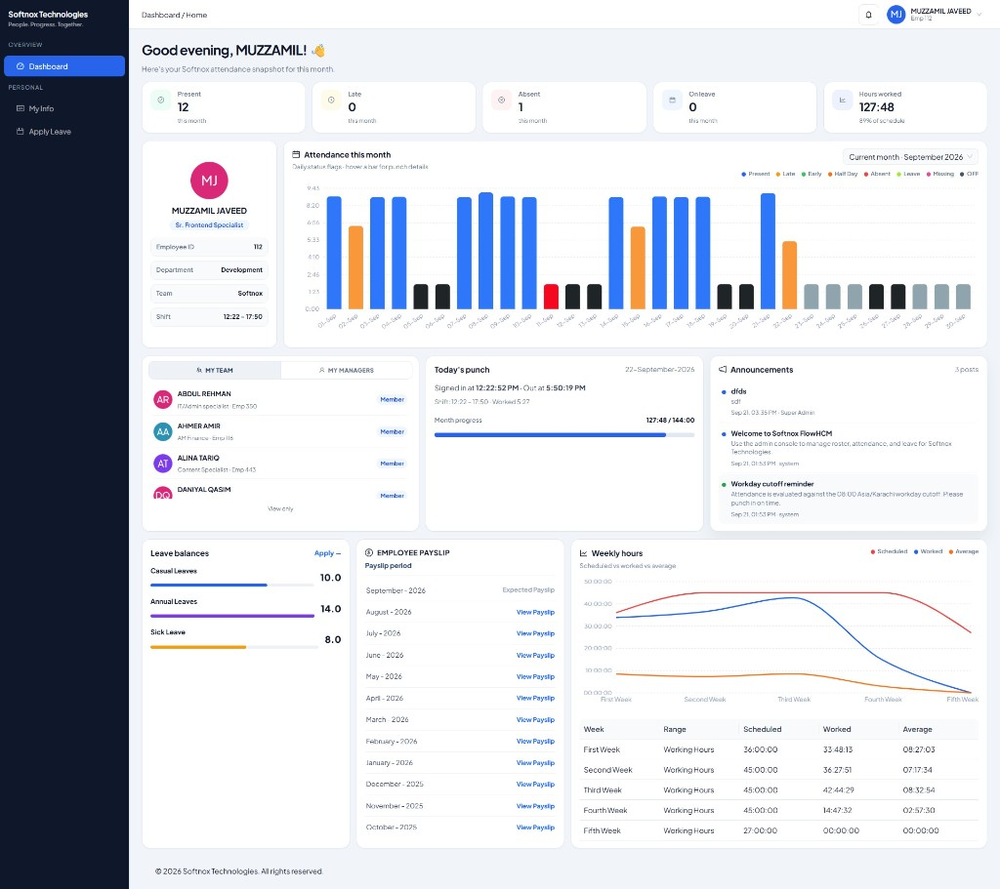
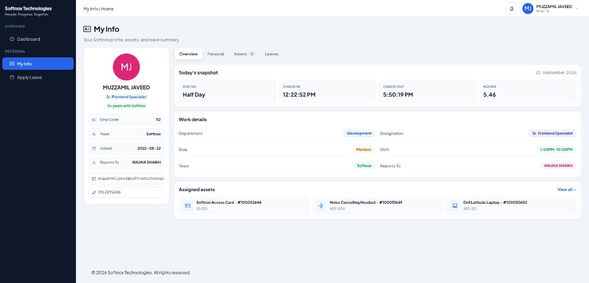
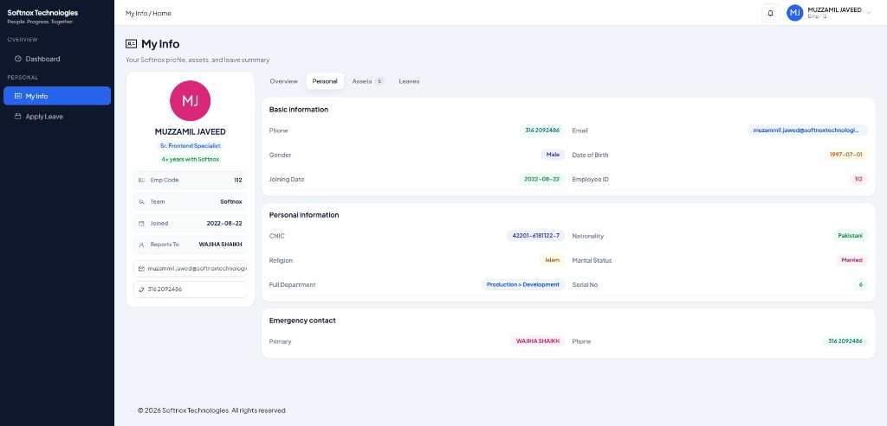
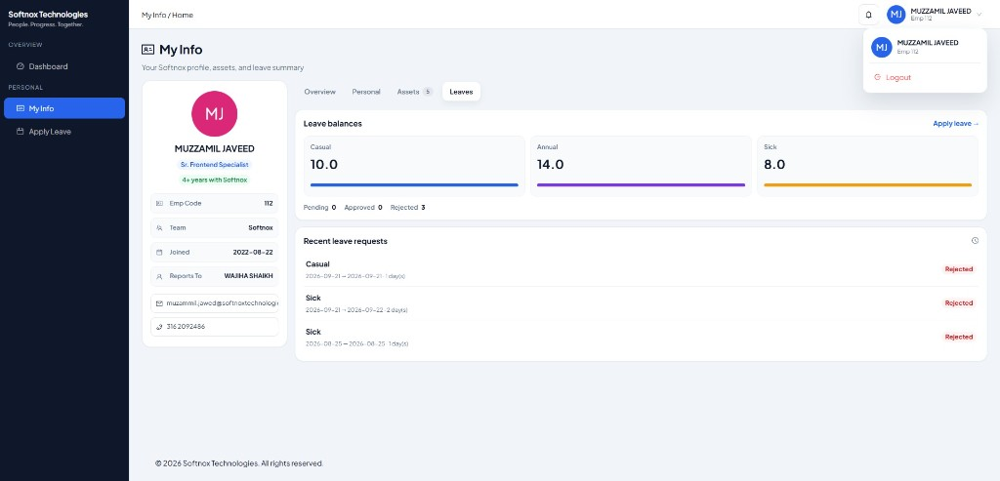
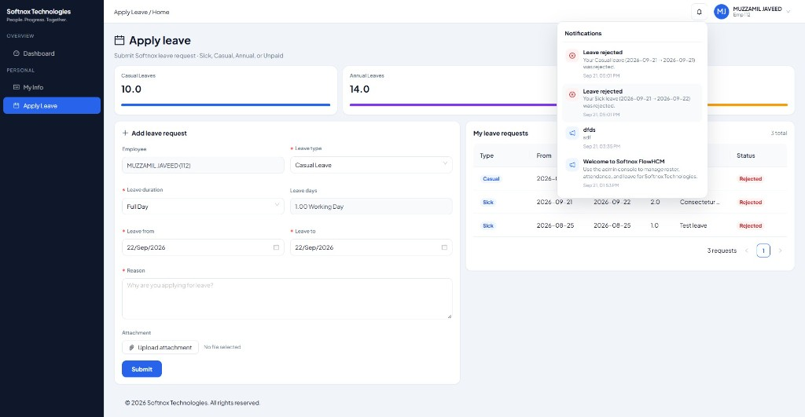
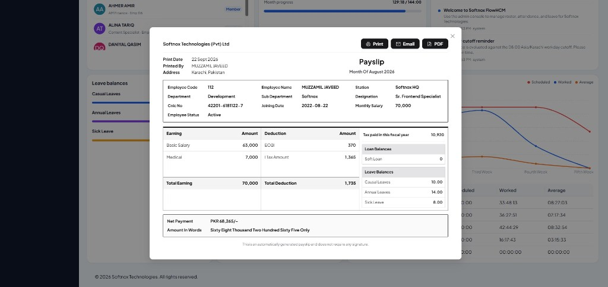

Softnox Technologies (Pvt) Ltd
FlowHCM Employee Portal
Functional Report
A concise, screen-by-screen overview of what a Softnox employee can view and perform
inside the employee self-service portal.
1. Document Purpose
This report explains the employee-facing Softnox FlowHCM portal: what each
screen shows, and what actions an employee can take. It is intended for leadership review
and onboarding clarity — not a technical development document.
2. Employee Access Summary
After login, an employee has a focused sidebar with three primary destinations:
DashboardAttendance, team, announcements, leaves, payslips, weekly hours
My InfoProfile, personal data, assets, leave history
Apply LeaveSubmit leave requests and track status
NotificationsBell alerts for news, leave approval/rejection
3. Contents
- Employee Dashboard
- My Info — Overview
- My Info — Personal
- My Info — Leaves
- Apply Leave
- Employee Payslip (View / Print / PDF)
- Capability Checklist
Screen 01
Employee Dashboard
The Dashboard is the employee home page. It gives a single-view snapshot of attendance,
today’s punches, team context, company announcements, leave balances, payslip history,
and weekly work hours.

Figure 1 — Softnox Employee Dashboard (full page)
What the employee can see
- Monthly KPIs: Present, Late, Absent, On Leave, and Hours Worked vs schedule.
- Profile card: Name, designation, Emp ID, department, team, and today’s shift window.
- Attendance chart: Day-wise status bars for the selected month (current / previous).
- My Team / My Managers: View-only roster of teammates and reporting managers.
- Today’s punch: Check-in, check-out, hours worked, and month progress.
- Announcements: Latest Softnox news visible to employees.
- Leave balances: Remaining Casual, Annual, and Sick leave with Apply shortcut.
- Employee Payslip list: Past months with “View Payslip”; current month as Expected.
- Weekly hours: Scheduled vs worked vs average chart and week table.
What the employee can do
- Switch attendance chart between Current month and Previous month.
- Open Apply Leave from Leave balances.
- Open a historical Payslip (print / save as PDF).
- Switch team widget tabs between My Team and My Managers (view only).
- Receive pulsing notification bell alerts for news and leave decisions.
Screen 02
My Info — Overview
My Info is the employee’s profile hub. The Overview tab summarizes today’s attendance,
organizational placement, and assigned company assets.

Figure 2 — My Info · Overview tab
What the employee can see
- Profile sidebar: Name, designation, tenure, Emp Code, team, joining date, reports-to, email, phone.
- Today’s snapshot: Status, check-in, check-out, and hours for the current workday.
- Work details: Department, designation, role, shift, team, and manager (tagged for clarity).
- Assigned assets: Preview of company assets (e.g. laptop, headset, access card).
What the employee can do
- Switch tabs: Overview · Personal · Assets · Leaves.
- Use View all on assets to open the full Assets tab.
- Verify day-to-day punch context without leaving the profile area.
Screen 03
My Info — Personal
The Personal tab presents HR master-data fields the employee may need for verification
(contact, identity, and emergency contact). Presentation uses Softnox tag styling for readability.

Figure 3 — My Info · Personal tab
What the employee can see
- Basic information: Phone, email, gender, date of birth, joining date, employee ID.
- Personal information: CNIC, nationality, religion, marital status, full department path, serial no.
- Emergency contact: Primary contact and phone.
What the employee can do
- Review personal HR record for accuracy (view-oriented self-service).
- Navigate back to Overview / Assets / Leaves tabs as needed.
Note for leadership: This screen is designed for transparency — employees can confirm
Softnox has the correct identity and contact details on file.
Screen 04
My Info — Leaves
The Leaves tab shows remaining leave balances against Softnox quota policy and a history
of recent leave requests with status (Pending / Approved / Rejected).

Figure 4 — My Info · Leaves tab
What the employee can see
- Balances: Casual, Annual, and Sick remaining days (synced from Softnox leave sheet / policy).
- Counters: Pending, Approved, and Rejected request counts.
- Recent requests: Type, date range, days, and decision status.
What the employee can do
- Click Apply leave → to open the Apply Leave form.
- Track whether Softnox admin has approved or rejected prior requests.
Screen 05
Apply Leave
Apply Leave is the transaction screen where an employee submits a leave request for Softnox
admin review. Balances are shown at the top; request history sits beside the form.

Figure 5 — Apply Leave form and request history
What the employee can see
- Live leave balance cards (Casual / Annual / Sick).
- Own leave request table with type, dates, days, reason, and status.
- Notification feed when a leave is approved or rejected.
What the employee can do
- Select leave type: Sick, Casual, Annual, Unpaid.
- Choose duration: Full Day or Half Day (days auto-calculate).
- Set Leave From / Leave To dates and enter a required reason.
- Optionally attach a supporting file (noted for later full upload release).
- Submit the request for Softnox admin approval workflow.
Screen 06
Employee Payslip (View / Print / PDF)
From the Dashboard payslip widget, an employee opens a Softnox-branded payslip for a past month.
The layout mirrors Softnox payroll communication: earnings, deductions, net pay, tax, loans, and leave balances.

Figure 6 — Softnox Employee Payslip viewer
What the employee can see
- Company header, print date, and payslip month.
- Employee code, name, department, designation, joining date, monthly salary.
- Earnings (e.g. Basic, Medical) and deductions (e.g. EOBI, Income Tax).
- Net payment in PKR and amount in words.
- Loan balances and leave balances snapshot.
What the employee can do
- Print the payslip.
- PDF — save via browser Print → Save as PDF (professional charcoal theme).
- Email — reserved for a later Softnox release.
7. Employee Capability Checklist
At a glance — what one Softnox employee can accomplish in FlowHCM:
8. Closing Note
The Softnox FlowHCM employee portal is designed as a self-service window:
employees stay informed on attendance, leave, payslips, assets, and announcements without
needing admin tools. Admin-only functions (approvals, payroll operations, roster management)
remain outside this document’s scope.